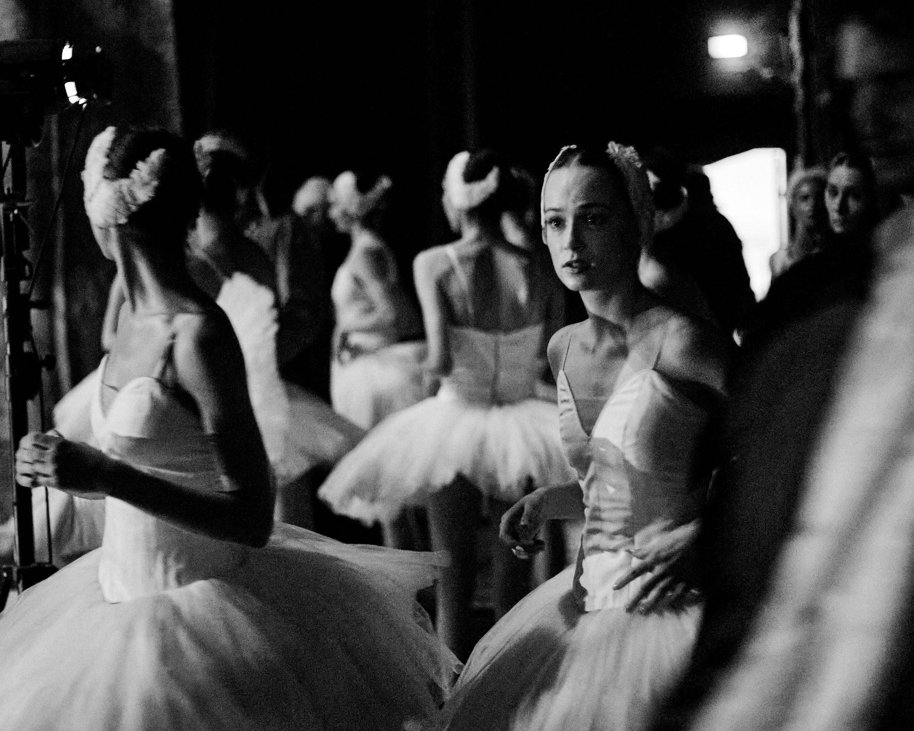
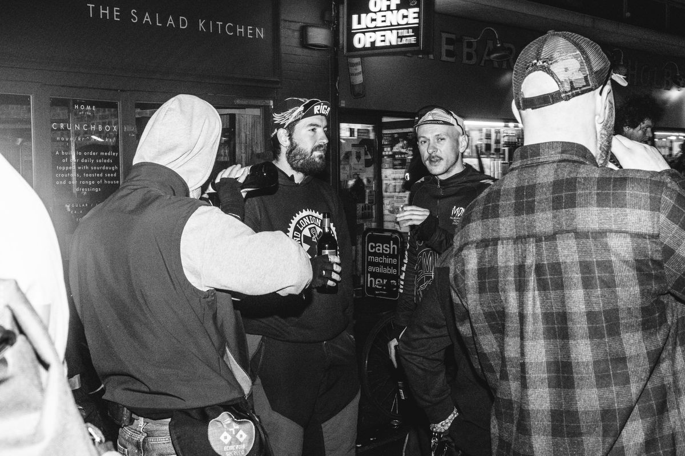
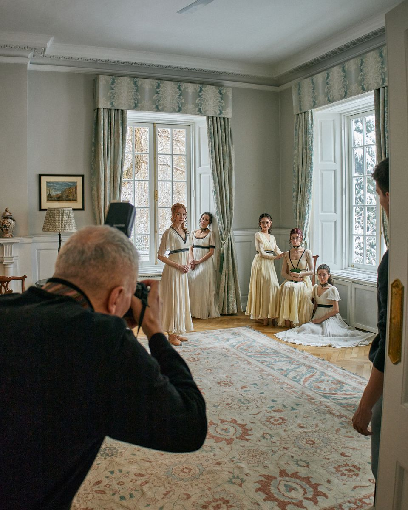
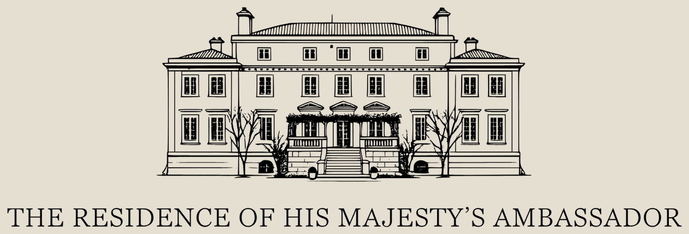
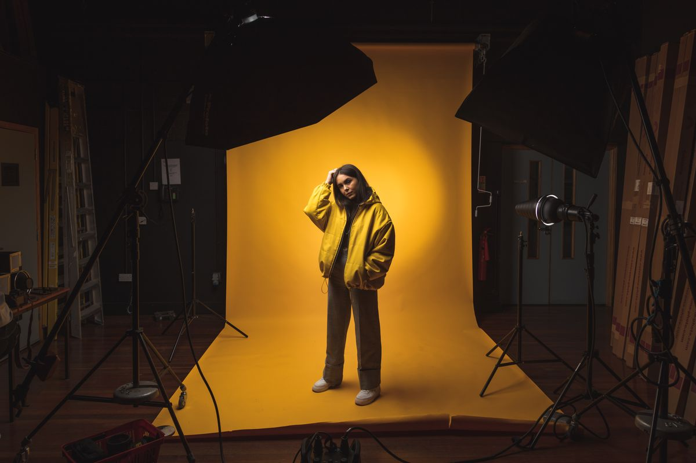
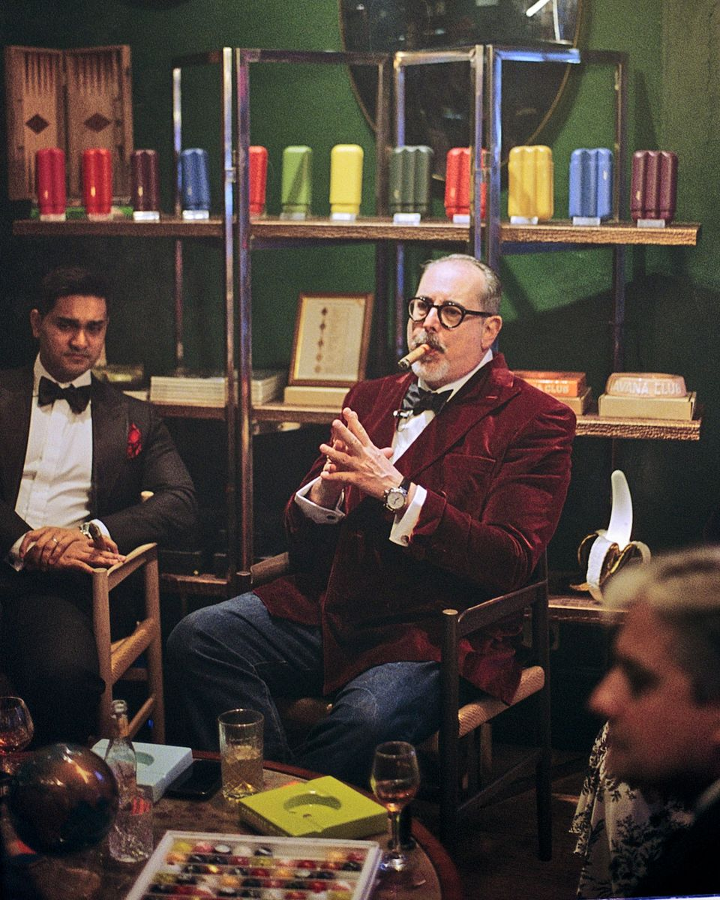

01
What you say matters as much as what you do. I close that gap for a handful of brands and institutions each year.

Recent and ongoing work across photography, creative direction, and brand identity.


The creative work is the easy part. Getting clear on what needs saying, to whom, and why it should land — that's where the real work sits.
Visual strategy, art direction, campaign concept. Project-level creative leadership for a specific moment, story, or launch.
Clients who need a single creative mind to carry the project from brief to delivery — not a committee, not a retainer. Usually: cultural institutions, hospitality brands, boutique retail, editorial.
Editorial and documentary sensibility applied to commercial briefs.
Hospitality, F&B, boutique retail, real estate, lifestyle, cultural institutions. Medium format and digital. International coverage available.
How a brand looks, sounds, and reads — built and maintained over time.
Strategic visual leadership that replaces the content retainer. Naming, wordmark, colour, type, and the rules for how to use them. Plus the ongoing creative direction that keeps it coherent as the brand grows.
Being good isn't enough anymore. Being understood is the work. I help brands and institutions close the gap between what they do and how it reads — through photography, creative direction, and considered visual identity.

01Photography
02Creative Direction
03Brand Identity
04Content Production
06Editorial